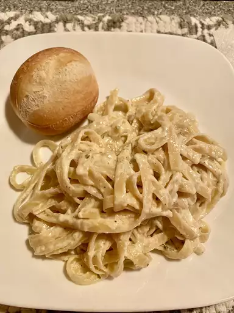

Here we see our result of the delicious pasta recipe. The alfredo is cheesy; specifically Romana and Parsesan cheese. It has garlic and is buttered. Simple enough, yet very delicious!
Ingredients
24 ounces dry fettuccine pasta
1 cup butter
3/4 pint heavy cream
salt and pepper to taste
1 dash garlic salt
3/4 cup grated Romano cheese
1/2 cup grated Parmesan cheese
Steps
Step 1: Bring a large pot of lightly salted water to a boil. Add fettuccine and cook for 8 to 10 minutes or until al dente; drain.
Melt butter into cream in a large saucepan over low heat; add salt, pepper, and garlic salt. Increase the heat to medium; stir in grated Romano and Parmesan cheese until melted and sauce has thickened.
Add cooked pasta to sauce and toss until thoroughly coated; serve immediately.